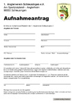

Jede natürliche Person mit einem gültigem Fischereischein kann Mitglied in unserem Verein werden. Wir freuen uns über neue Mitglieder die sich aktiv am Angelsport beteiligen wollen und sich tatkräftig in die Vereinsarbeit einbringen.
Bei Interesse können Sie sich per Email melden oder besucht uns einfach bei einem Arbeitseinsatz oder einer Mitgliederversammlung.

>> Aufnahmeantrag ausfüllen/ausdrucken
Zur Ansicht benötigen die Sie den Adobe Reader.
Falls dieser nicht auf Ihrem PC installiert ist, können Sie hier die aktuellen Version von Adobe Reader kostenlos herunterladen.
Empfohlen für den Download - DSL Geschwindigkeit.